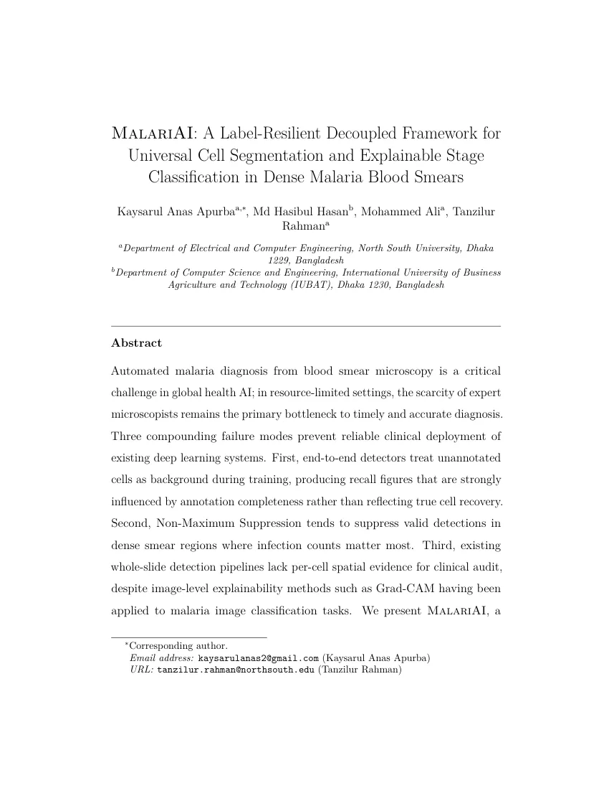

MalariAI：面向密集疟疾血涂片的弱标注鲁棒细胞分割与可解释阶段分类MalariAI: A Label-Resilient Decoupled Framework for Universal Cell Segmentation and Explainable Stage Classification in Dense Malaria Blood Smears
与 SLAM/GNSS/三维重建方向弱相关，仅对不完整标注下的密集实例分割 pipeline 有外围参考。
一句话工作总结
弱标注密集实例分割加 per-cell 可解释分类的医学图像 pipeline；SLAM 主线可低优先级跳过。
摘要
MalariAI 是医学显微图像两阶段 pipeline。第一阶段使用 annotation-agnostic distance-transform guided watershed 在完整 1600×1200 血涂片图像中分割所有细胞，避免把未标注细胞当背景训练检测器；第二阶段用 EfficientNet-B0、Focal Loss 和类别反频率权重对 64×64 crop 做阶段分类。每个检测细胞还生成 Grad-CAM++ 热力图作为实例级临床审计证据。论文报告在 NIH BBBC041 test set 上按 centroid localization 恢复 75.95% ground-truth cells，总体分类准确率 98.36%。
Automated malaria diagnosis from blood smear microscopy is a critical challenge in global health AI; in resource-limited settings, the scarcity of expert microscopists remains the primary bottleneck to timely and accurate diagnosis. Three compounding failure modes prevent reliable clinical deployment of existing deep learning systems. First, end-to-end detectors treat unannotated cells as background during training, producing recall figures that are strongly influenced by annotation completeness rather than reflecting true cell recovery. Second, Non-Maximum Suppression tends to suppress valid detections in dense smear regions where infection counts matter most. Third, existing whole-slide detection pipelines lack per-cell spatial evidence for clinical audit, despite image-level explainability methods such as Grad-CAM having been applied to malaria image classification tasks. We present MalariAI, a two-stage decoupled framework that addresses all three failure modes in a unified pipeline. Stage 1 applies an annotation-agnostic distance-transform guided watershed algorithm to isolate every cell in a full 1600x1200 blood smear image, recovering 75.95% of ground-truth cells by centroid localisation across the 120-image NIH BBBC041 test set without any ground-truth input. Stage 2 fine-tunes EfficientNet-B0 with Focal Loss (gamma = 2.0, per-class inverse-frequency weights) on 64x64 crops, achieving 98.36% overall classification accuracy with 87.5% and 75.0% per-class accuracy on the rare schizont and gametocyte stages, compared to only 24.57% and 25.95% AP for a Faster R-CNN baseline on the same classes. Grad-CAM++ heatmaps generated per detected cell provide instance-level spatial evidence for clinical audit, enabling microscopists to verify model predictions at the individual parasite level without sacrificing classification performance.
中文解读摘录
- 为什么看：医学图像方向，和 SLAM/GNSS 主线距离很远；可作为“弱标注/漏标注密集实例分割 + per-instance xAI”的方法参考。
- 方法要点：两阶段 decoupled framework：先用 annotation-agnostic distance-transform watershed 分割全图细胞，再用 EfficientNet-B0 + Focal Loss 分类 64×64 crops；每个检测细胞生成 Grad-CAM++ 证据热力图。
- 结果信号：在 NIH BBBC041 test set 上 centroid localization 恢复 75.95% ground-truth cells；总体分类准确率 98.36%，rare schizont/gametocyte 分别 87.5%/75.0%。
- 跟踪建议：SLAM 方向通常可跳过；若做密集实例分割且标注不完整，可参考其避免把未标注目标当背景的 pipeline 思路。
- 链接：abs · PDF
图表/页面预览

{kind=link}
